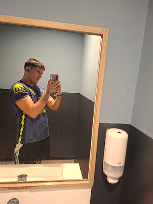

Datos personales
- Nombre: Antonio Cuevas
- Edad: 18 años
- Centro: IES Medina Azahara, Córdoba
- Curso: 1.º de ASIR
Soy estudiante de 1ºAsir en el Ies Medina Azahara en Córdoba.Tengo 18 años y soy del Atletico de madrid.Me gustaria trabajar en algo relacionado con la informática ya que es algo muy intersante y que me genera muchisima curiosidad
Conoce quien soy
Algunos datos para conocerme mejor.
Mi recorrido educativo.
2020-2024
En 2020 despues de la cuarentena del Covid-19, inicie mi etapa en la educacion segundaria, una etapa que nunca voy a olvidar y ojala poder volver.
2024 - 2026
Me matricule de Bachillerato Técnologico en el Ies Villarrubia, fue una experiencia muy bonita porque aunque haya que estudira mucho es un epoca que nunca recomendaria saltar.
2026 - Actualidad
Despues de Matricularme de Bachillerato con una media de 7'18 decidi meterme en un grado relacionado con la informática y este fue el que mas me había gustado y decidi intertarlo y probar si era verdad que me gustaba.
Proximo Año
Despues de sacarme este año el curso de primer año de asir, me metere en el segundo con la esperanza de poder realizar practicas y adquirir conocimientos relacionados con la informática.
Lo que hago en mi tiempo libre.
Me gusta jugar juegos como el Fifa, el Valorant otros muchos relacionados, pero sobre todo jugarlos con amigos.
La musica es algo con la que tambien interactuo mucho sobre todo cuando voy al gimnasio es algo que me despeja.
Me gusta realizar muchos deportes como jugar al padel, alguna pachanga del futbol e incluso el tenis, son deportes que no hago muy a menudo pero que siempre tengo ganas de jugarlos. EL que mas llevo al dia es el gimnasio que es muy importante porque me ayuda a despejarme.